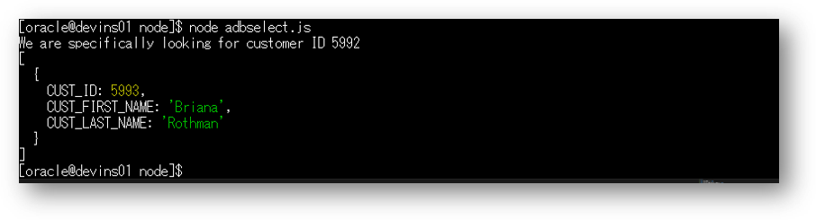

Node.jsはサーバサイドでJavaScript言語を実行するオープンソースの実行環境です。
node-oracledbドライバを利用することで、Autonomous Databaseに簡単に接続できます。
尚、JavaScriptのコーディングやNode.js自体の使い方を説明するものではありません。
所要時間 : 約20分
前提条件 :
- ADBインスタンスが構成済みであること
※ADBインタンスを作成方法については、本ハンズオンガイドの 101:ADBインスタンスを作成してみよう を参照ください。 - 開発用の仮想マシンが構成済みであり、仮想マシンからADBインスタンスへのアクセスが可能であること
- 仮想マシンのoracleユーザのホームディレクトリ配下にlabsフォルダをアップロード済みであること
- labs.zip を手元のPCにダウンロード
アップロード方法については こちら をご確認ください。 - 仮想マシン上に直接ダウンロードする場合は、次のコマンドを実行します。
wget https://oracle-japan.github.io/ocitutorials/database/adb-data/labs.zip
- labs.zip を手元のPCにダウンロード
目次
1. 事前準備
ネットワークセキュリティの設定変更
本章ではお手元のPCからインターネットを介して、Node.jsのアプリにポート3030で接続します（3030は変更可能）。
OCIではセキュリティ・リストと呼ばれる仮想ファイアウォールの役割を担うリソースがありますが、このセキュリティ・リストのデフォルトの設定では、こちらの接続は拒否されます。
ポート3030からの接続を可能にするには、事前に外部インターネットからこの接続を受け入れるためのイングレス・ルール(インバウンド・ルール)の設定、およびNode.jsが配置される仮想マシンのOSのFirewallの設定を行う必要があります。
※ セキュリティ・リストに関する詳細な情報はこちら
- イングレス・ルールの設定
-
メニューから
ネットワーキング、仮想クラウド・ネットワークを選択します。
-
作成済みの仮想クラウド・ネットワーク（
vcn01）を選択します。
（こちらの画面では、ADB_HOL_DEV_VCNとなっています）
※該当するVCNが表示されない場合は、適切なリージョンおよびコンパートメントが選択されていることをご確認ください。
-
画面左下のリソースからセキュリティ・リストを選択し、
Default Security List for [VCN名]をクリックします。
-
イングレス・ルールの追加をクリックします。

-
入力ウィザードが立ち上がるので、以下の記載例を参考に各項目を入力し、
イングレス・ルールの追加をクリックします。ソースCIDR 0.0.0.0/0 IPプロトコル TCP ソースポート範囲 all 宛先ポート範囲 3030 
（パブリック・インターネット(0.0.0.0/0) からの 3030に対する接続を許可する）
- Firewallの設定
-
仮想マシンにopcユーザでログインします。ログイン方法は 204: マーケットプレイスからの仮想マシンのセットアップ方法 2. 仮想マシンへのアクセス を参照ください。

-
次のコマンドでrootユーザに切り替えます。
sudo -s
（oracleユーザーで既にログインしている場合は、exit してください。）
exit -
ポート番号3030を追加し、設定を反映します。
（successと表示されればOKです。） 次の２つのコマンドを順に実行します。-- ポート番号3030を追加 firewall-cmd --permanent --zone=public --add-port=3030/tcp -- 設定を反映 firewall-cmd --reload
※上記の設定はあくまでも参考です。実際の利用に際してはセキュリティ要件を十分検討の上、設定ください。
2. Node.js環境の確認
ここではお手元のPCのブラウザでNode.jsのアプリに接続できるかを確認します。
-
ユーザをrootからoracleに切り替えます。rootユーザとして次のコマンドを実行します。
su - oracle
-
（必要に応じて）nodeとnpm(Node Package Manager)のバージョンを確認します。
-- nodeのバージョンを確認 node --version -- npmのバージョンを確認 npm --version -
（必要に応じて）npmコマンドを実行しプリインストールされているパッケージを確認します。
npm view oracledb npm view app npm view async -
Hello World アプリケーションを実行し、Node.jsが問題なく利用できることを確認しましょう
4-1. nodeディレクトリに移動します。
cd ~/labs/node
4-2. （必要に応じて）app.jsファイルの中身を確認します。
cat app.jsアクセスしてきたクライアントに対して、Hello World を表示するという内容です。
※app.jsの中身は次の通りです。const port = 3030; const http = require('http'); var os = require('os'); var hostname = os.hostname(); const server = http.createServer((req, res) => { res.statusCode = 200; res.setHeader('Content-Type', 'text/plain'); res.end('Hello World\n'); }); server.listen(port, hostname, () => { console.log(`Server running at http://<Your Compute IP Address>:${port}/`); });4-3. app.jsを実行します。
node app.js
※コードの
<Your Compute IP Address>のところはそのままで問題ありません。4-4. ブラウザを開き、以下のURLを実行して、”Hello world” が表示されることを確認します。
<仮想マシンのIPアドレス>のところには、app.jsを起動した仮想マシンに割り当てられているパブリックIPアドレスを入力します。http://<仮想マシンのIPアドレス>:3030次のように表示されればOKです。

4-5. Hello World が表示されることを確認後、端末上で CTRL-C を入力しアプリを停止します。
3. ADBに接続してみよう
次にNode.jsのアプリからADBに接続し、ADB上のデータを手元のブラウザ経由で確認します。
尚、事前に 104: クレデンシャル・ウォレットを利用して接続してみよう 3-1. SQL*Plus を使った接続 を実施し、
SQL*plusで接続できていることを前提に以下を記載しています。
-
nodeディレクトリに移動します。
cd ~/labs/node -
接続先となるAutonomous Databaseの情報をdbconfig.jsに登録します。
以下を記載例を参考に各項目を記載して保存ください。
vi dbconfig.jsmodule.exports= { dbuser: 'admin', dbpassword: 'Welcome12345#', connectString: 'atp01_tp' }※ご自身でパスワードを設定した場合は、そちらを記載してください。

【参考】 viの操作方法
キー入力 動作 上下左右キー カーソルの場所を移動する i カーソルの場所から編集する（InsertModeに入る） ESCキー InsertModeを抜ける x カーソルの場所を一文字消す :wq ファイルを保存して閉じる :q ファイルを閉じる（それまでの編集は破棄される） :q! 強制的に終了する -
環境変数を設定します。
export TNS_ADMIN=/home/oracle/labs/wallets
-
（必要に応じて）connectadb.jsファイルの中身を確認します。
cat connectadb.jsADBへの接続を生成し、接続の生成可否を画面に表示するという内容です。
※connectadb.jsの中身は次の通りです。const port=3030; var http = require('http'); var os = require('os'); var hostname = os.hostname(); var oracledb = require('oracledb'); var dbConfig = require('./dbconfig.js'); let error; let user; oracledb.getConnection ( { user: dbConfig.dbuser, password: dbConfig.dbpassword, connectString: dbConfig.connectString }, function(err, connection) { if (err) { error = err; return; } connection.execute ( 'select user from dual', [], function(err, result) { if (err) {cerror = err; return; } user = result.rows[0][0]; console.log(`Check to see if your database connection worked at http://<Your Compute IP Address>:${port}/`); error = null; connection.close( function(err) { if (err) { console.log(err); } } ); } ) } ); http.createServer(function(request, response) { response.writeHead(200, {'Content-Type': 'text plain' }); if (error === null) { response.end('Connection test succeeded. You connected to ADB as ' + user + '!'); } else if (error instanceof Error) { response.write('Connection test failed. Check the settings and redeploy app!\n'); response.end(error.message); } else { response.end('Connection test pending. Refresh after a few seconds...'); } }).listen(port); -
connectadb.jsを実行します。
node connectadb.js
-
ブラウザを開き、以下のURLを実行して、Successed と表示されることを確認します。
<仮想マシンのIPアドレス>のところには、実際のパブリックIPアドレスを入力します。http://<仮想マシンのIPドレス>:3030
-
接続確認ができたら、端末上で CTRL-C を2回入力しアプリを停止します。
補足
次のようなエラーが表示された場合は、sqlplusの共有ライブラリを参照できるようにパスを設定する必要があります。

設定方法は こちら を参照ください。
4. ADB上のデータを操作してみよう
最後に、上記で作成したADBへの接続を利用して、ADBの中に格納されているデータを見てみましょう。
-
（必要に応じて）adbselect.jsの中身を確認します。
cat adbselect.jsADBへの接続を作成して、簡単なSELECT文を実行するという内容です。
※adbselect.jsの中身は次の通りです。var oracledb = require('oracledb'); var dbConfig = require('./dbconfig.js'); oracledb.getConnection ( { user: dbConfig.dbuser, password: dbConfig.dbpassword, connectString: dbConfig.connectString }, function(err, connection) { if (err) { console.error(err.message); return; } connection.execute ( 'SELECT CUST_ID, CUST_FIRST_NAME, CUST_LAST_NAME FROM sh.customers WHERE CUST_ID = 5993', {}, { outFormat: oracledb.OBJECT }, function(err, result) { if (err) { console.error(err.message); doRelease(connection); return; } console.log('We are specifically looking for customer ID 5992'); console.log(result.rows); doRelease(connection); } ); } ); function doRelease (connection) { connection.close ( function(err) { if (err) { console.error(err.message); } } ); } -
adbselect.jsを実行します。次のように、特定のCUSTOMER IDの情報が表示されればOKです。
node adbselect.js
以上で、この章の作業は終了です。
次の章にお進みください。